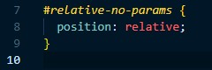
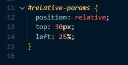
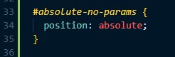
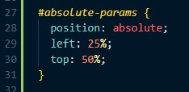
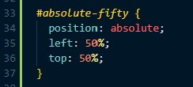
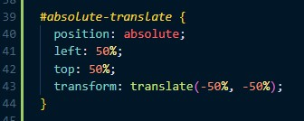
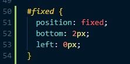

Andrew Molten's Blog

An element with this property may move relative to its default static position. But if set to relative without any additional parameters then it will just appear in its default position:
No parameters
You can add the parameters top, right, bottom, left, which will then move the element said amount away from that side i.e. top: 30px will move the box 30px down (away from the top), from where it would have been positioned to by default. Or left: 25% will move it 25% away from the left of where it would default to:
top: 30px
left: 25%
An absolute element allows you to position it absolutely anywhere you want to on the page.
It will sit at a specified position within a parent element that is positioned relative or absolutely. If no such parent element exists, then its parameters will position it relative to the whole page, but strangely without parameters it will still sit within its parent element.
As you can see below in the first example, the blue absolutely positioned box inside the red relatively positioned box is sitting in the top left corner because it hasn’t been given any parameters. If the red box was still set to position: static; it actually wouldn’t change a thing right now.
And in the next example the property left: 25%; has moved the blue square away from the left by 25%. While the property top: 50%; has been used to shift it away from the top by 50%.
I want to show one more example because I have found this concept very confusing in the past. While you might think that simply giving it the properties left: 50%; top: 50%; would center the blue box inside the red box, it does not. It moves the left side of the box to the horizontal 50% mark of the red box, and the top of the blue box to the vertical 50% mark of the red box.
And while in this example you could just use the value 25% to center it because the blue box is exactly 50% the size of the red box, that would make things very confusing later when you try to center an element absolutely which has odd proportions compared to its parent.
To solve this you need to add the property transform: translate(-50%, -50%); which will shift the blue box -50% of its own size, along the X & Y axis. Essentially finding its center. This has taken me a long time to wrap my head around, and it wasn’t until writing this blog post that I got it. So if that’s too much for you right now, then not a worry, take some time to play around with these properties by themselves and it will eventually make sense.
While this is a very powerful property, it’s also important to remember the side effects of using it. When an element is positioned absolutely it removes it from the flow of the page, therefore it cannot affect other elements, and other elements cannot affect it.
If an element is fixed then it will be fixed to the specified parameters of your screen as you scroll or whatever you do.
I’ve illustrated this with the green line at the bottom of the screen which is hovering 2px from the bottom of the screen.
The same parameters can be used with fixed: top, left, bottom, right. But in this case they position the element from said parameter of the viewport (screen). This can be handy if you want the navigation to stay at the top of the screen as users scroll, if you want to have a chat bubble in a corner of the screen, or something like an accessibility toolbar on the screen at all times.
The biggest thing to keep in mind if you are using the fixed position is can interfere with content on your page by making parts of your page unreadable/unclickable. So do think about what effect this will have on your page, and this is where testing in multiple views will become important i.e. desktop, mobile, tablet.